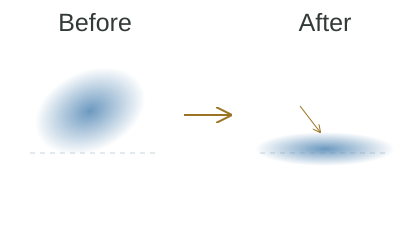
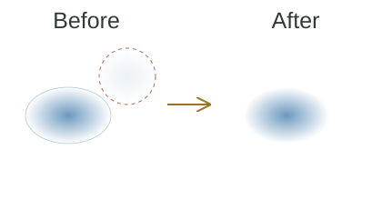
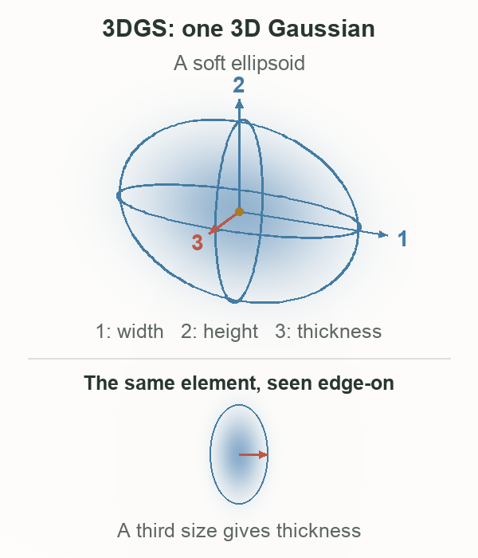
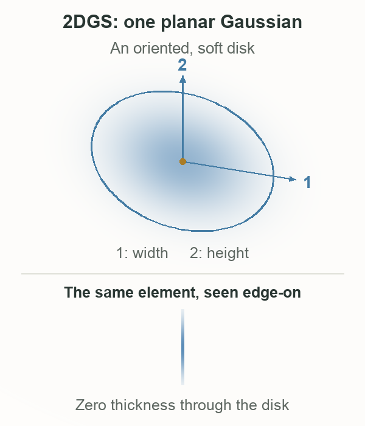
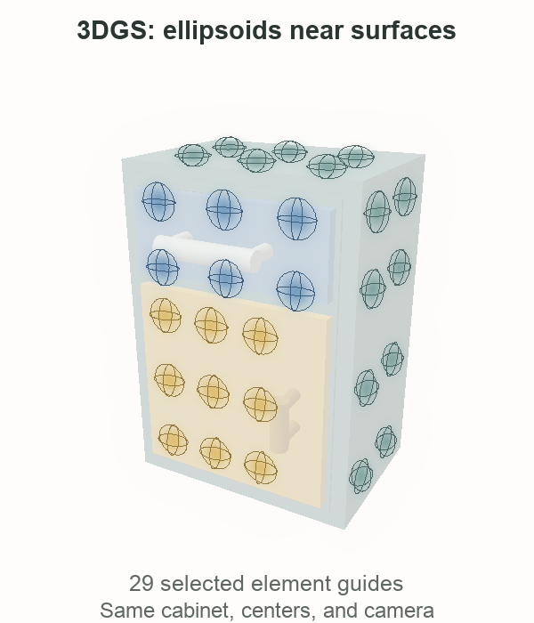
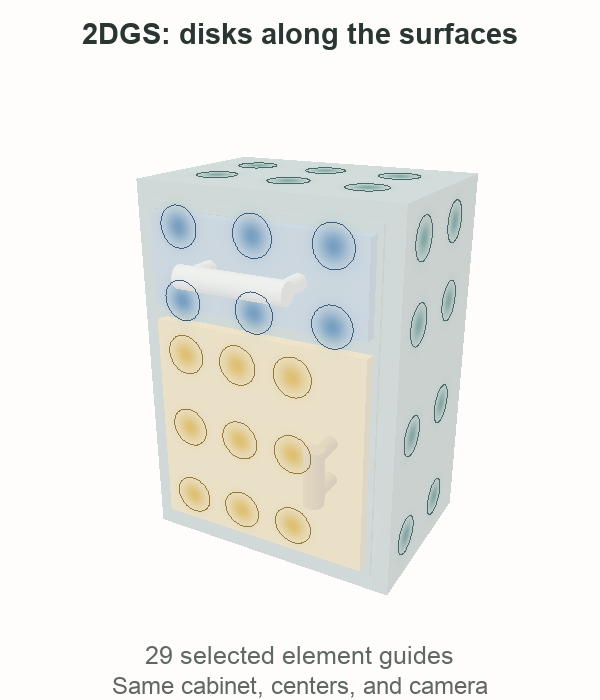

2.9 Gaussians: reconstruction with 3DGS and 2DGS
C. Reconstruction and generation · 3DGS and 2DGS
3DGS and 2DGS are two ways to reconstruct the same cabinet from photographs. Both first fit a 3D representation to multiple views, then use the saved result and a virtual camera to render new views.
Choose either method for a reconstruction. To compare them, run each on the same prepared photographs and cameras, producing two separate results. Each result uses its corresponding renderer.
The same photographs, two reconstruction methods
Original 3DGS focuses on making accurate-looking views of the scene. Its training adjusts soft 3D ellipsoids until their rendered pictures resemble the photographs. 2DGS also fits the pictures, while explicitly encouraging a consistent surface. It uses flat Gaussian disks and adds training constraints on where the surface lies and which way it faces. See the 3DGS and 2DGS projects.
For the blue drawer front, image quality means that the blue panel and handle look right in a rendered picture. Surface quality means that the recovered panel lies in the right place in 3D, faces the right direction, and forms a coherent surface. These are two ways to evaluate the reconstruction.
One set of cabinet photographs, two routes
Each route fits its own representation. The steps line up for comparison.
New view: new camera + 2DGS renderer → a 2D color image.
Optional mesh: render depth maps → combine depth → extract surfaces.
Fitting loop: repeat rendering, comparison, and adjustment across the input camera views before saving.
Mesh extraction uses the saved 2DGS disks to render depth; new color images are a separate output. A 3DGS mesh requires an additional surface-reconstruction workflow.
For a cabinet viewer, both methods can produce new camera views. When recovering panel surfaces and an editable mesh is also a goal, 2DGS provides a workflow designed around that goal. Inspect both the rendered pictures and the recovered geometry for the intended use.
The two walkthroughs below use the same five steps: prepare → initialize → render and adjust → save → use.
The 3DGS fitting loop in pictures
This is a teaching diagram. Rendered cabinet views stand in for photographs; the stages below illustrate the process, rather than showing a recorded training run.
Initialize the blobs and render a first picture

Points now have size, color, and opacity.

The drawer and handle look blurry.

The image we want to match.
Compare from the same camera position. Otherwise, a difference could simply come from looking at the cabinet from a different angle.
Use the image differences to update the blobs
Fit the Gaussian cabinet
- 01Render3D blobs → 2D image
- 02CompareRendered image ↔ photo
- 03UpdateChange the 3D blobs
Render again, compare again, update again.
The comparison gives an error: how different are the images? The fitting process uses that error to adjust the blobs. For example, several smaller blobs can describe the handle more precisely than one large, blurry blob.

Change position, size, orientation, color, or opacity.

Clone a blob, or split a large one into smaller ones.

Discard blobs with very low opacity.
These changes happen in 3D, so they affect several camera views. The original 3DGS method alternates parameter updates with adding and removing blobs.
Fit across the views, then render a new view
Many overlapping blobs form a clearer cabinet image.

Render the same 3D blobs from another position.
Fitting repeats across the photographs so that one set of 3D blobs explains many views. We save those blobs and can then render new views. This is the purpose of the 3DGS representation; it does not automatically add a drawer joint or the cabinet’s mass.
Reconstruct the cabinet with 3DGS
- Prepare the inputs. Collect overlapping cabinet photographs. Use the COLMAP workflow in Section 2.8.3 to estimate cameras and sparse 3D points. The points provide starting locations for the Gaussians.
- Initialize the elements. Place a soft 3D ellipsoid at each starting point. Give it a position, orientation, three sizes, opacity, and appearance.
- Render, compare, and adjust. Render from a training photograph’s camera and compare the pixels. Adjust the ellipsoids to reduce the image differences, repeating across the views. The method can also add, split, or remove elements. At the blue drawer, the fit is guided by how well the rendered panel and handle match the photographs.
- Save the fitted representation. Keep the ellipsoids’ positions, orientations, sizes, opacity, and appearance. Together they describe this cabinet in 3D.
- Use the result. Give the saved ellipsoids and a new virtual camera to a 3DGS renderer to make another image. Surface reconstruction is an additional operation when a mesh is needed.
Section 2.6.1 explains the rendering operation used in Step 3: project the ellipsoids into soft image marks and blend them. The original paper explains the updates. The VGGT export in Section 2.8.5 provides another source of cameras and starting points for a supported Gaussian training pipeline.
2DGS: reconstruct with surface Gaussians
2D Gaussian Splatting (2DGS) reconstructs a scene using oriented Gaussian disks. For the cabinet, these disks can follow the drawer front, side panels, and top. It fits them to photographs while also encouraging a coherent surface. 2DGS project.
What does “2D” describe?
Both methods describe a scene in 3D and render 2D images. Here, “2D” and “3D” describe the dimensions of one Gaussian element:




Both elements store opacity and appearance, with influence fading away from the center. The outlines are shape guides; the edge-on line makes the disk’s plane visible. A 3D Gaussian can also become very flat during fitting. 2DGS explicitly uses a plane and a renderer designed for it.
Arrange the elements around the same cabinet
A disk on the drawer front faces forward; one on the side faces sideways; one on top faces upward. Many such patches describe a 3D object. The front and back of a thick panel can be represented by separate sets of surface patches.




Scripted illustrations with the same cabinet, camera, and 29 selected centers. The pale solid cabinet provides context; the colored guides show individual elements. A fitted reconstruction uses many more elements. These diagrams illustrate their structure; the authors’ results show reconstruction quality.
What does improving the drawer surface mean?
Both methods adjust their elements to make the blue drawer look right in the photographs. 2DGS also encourages the patches to describe one coherent panel in 3D. Along a view of the drawer front, its constraints encourage the visible contributions to gather near one surface depth. They also encourage the disks to face in directions that agree with the reconstructed panel’s shape.
This helps when recovering the panel’s surface and extracting a mesh. The image fit, disk geometry, and surface constraints work together. Their technical names and equations are in the paper’s depth-distortion and normal-consistency description.
Reconstruct the cabinet with 2DGS
- Prepare the inputs. Collect overlapping cabinet photographs. Use the same COLMAP workflow in Section 2.8.3 to estimate cameras and sparse 3D points. The official 2DGS implementation accepts this preparation.
- Initialize the elements. Place a soft disk at each starting point. Give it a position, orientation, two sizes within its plane, opacity, and appearance.
- Render, compare, and adjust. Render from a training photograph’s camera and compare the pixels. Adjust the disks using both image differences and the surface constraints above, repeating across the views. The method can also add, split, or remove elements. At the blue drawer, both its photographed appearance and the consistency of its recovered panel guide the fit.
- Save the fitted representation. Keep the disks’ positions, orientations, sizes, opacity, and appearance. Together they describe this cabinet in 3D.
- Use the result. Give the saved disks and a new virtual camera to a 2DGS renderer to make another image. For a mesh, use the supplied depth-fusion and surface-extraction workflow described below.
In Step 3, the 2DGS renderer calculates where each pixel’s camera ray meets a disk’s plane, then blends the disks’ contributions into the pixel. This uses the plane’s location and orientation in 3D. See the rendering description and official training implementation.
A mesh is an additional output. The provided extraction workflow renders depth maps from several cameras. It combines those depth observations—a step called depth fusion—then extracts connected surface faces. The resulting mesh can be inspected in a mesh editor: check the cabinet panels and the gap behind the handle. See the official mesh-extraction workflow and rendering and geometry examples.
To describe how the recovered object’s parts move, a mesh can continue into Articulate AnyMesh in Section 3.6. Its project demonstrates this route from a 2DGS surface mesh to an articulated URDF.